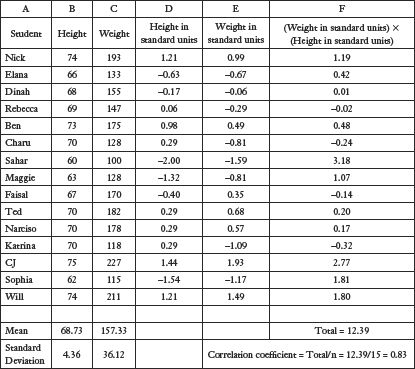

How does Netflix know what movies I like?
Netflix insists that I’ll like the film Bhutto, a documentary that offers an “in-depth and at times incendiary look at the life and tragic death of former Pakistani prime minister Benazir Bhutto.” I probably will like the film Bhutto. (I’ve added it to my queue.) The Netflix recommendations that I’ve watched in the past have been terrific. And when a film is recommended that I’ve already seen, it’s typically one I’ve really enjoyed.
How does Netflix do that? Is there some massive team of interns at corporate headquarters who have used a combination of Google and interviews with my family and friends to determine that I might like a documentary about a former Pakistani prime minister? Of course not. Netflix has merely mastered some very sophisticated statistics. Netflix doesn’t know me. But it does know what films I’ve liked in the past (because I’ve rated them). Using that information, along with ratings from other customers and a powerful computer, Netflix can make shockingly accurate predictions about my tastes.
I’ll come back to the specific Netflix algorithm for making these picks; for now, the important point is that it’s all based on correlation. Netflix recommends movies that are similar to other films that I’ve liked; it also recommends films that have been highly rated by other customers whose ratings are similar to mine. Bhutto was recommended because of my five-star ratings for two other documentaries, Enron: The Smartest Guys in the Room and Fog of War.
Correlation measures the degree to which two phenomena are related to one another. For example, there is a correlation between summer temperatures and ice cream sales. When one goes up, so does the other. Two variables are positively correlated if a change in one is associated with a change in the other in the same direction, such as the relationship between height and weight. Taller people weigh more (on average); shorter people weigh less. A correlation is negative if a positive change in one variable is associated with a negative change in the other, such as the relationship between exercise and weight.
The tricky thing about these kinds of associations is that not every observation fits the pattern. Sometimes short people weigh more than tall people. Sometimes people who don’t exercise are skinnier than people who exercise all the time. Still, there is a meaningful relationship between height and weight, and between exercise and weight.
If we were to do a scatter plot of the heights and weights of a random sample of American adults, we would expect to see something like the following:
Scatter Plot for Height and Weight
If we were to create a scatter plot of the association between exercise (as measured by minutes of intensive exercise per week) and weight, we would expect a negative correlation, with those who exercise more tending to weigh less. But a pattern consisting of dots scattered across the page is a somewhat unwieldy tool. (If Netflix tried to make film recommendations for me by plotting the ratings for thousands of films by millions of customers, the results would bury the headquarters in scatter plots.) Instead, the power of correlation as a statistical tool is that we can encapsulate an association between two variables in a single descriptive statistic: the correlation coefficient.
The correlation coefficient has two fabulously attractive characteristics. First, for math reasons that have been relegated to the appendix, it is a single number ranging from –1 to 1. A correlation of 1, often described as perfect correlation, means that every change in one variable is associated with an equivalent change in the other variable in the same direction.
A correlation of –1, or perfect negative correlation, means that every change in one variable is associated with an equivalent change in the other variable in the opposite direction.
The closer the correlation is to 1 or –1, the stronger the association. A correlation of 0 (or close to it) means that the variables have no meaningful association with one another, such as the relationship between shoe size and SAT scores.
The second attractive feature of the correlation coefficient is that it has no units attached to it. We can calculate the correlation between height and weight—even though height is measured in inches and weight is measured in pounds. We can even calculate the correlation between the number of televisions high school students have in their homes and their SAT scores, which I assure you will be positive. (More on that relationship in a moment.) The correlation coefficient does a seemingly miraculous thing: It collapses a complex mess of data measured in different units (like our scatter plots of height and weight) into a single, elegant descriptive statistic.
How?
As usual, I’ve put the most common formula for calculating the correlation coefficient in the appendix at the end of the chapter. This is not a statistic that you are going to be calculating by hand. (After you’ve entered the data, a basic software package like Microsoft Excel will calculate the correlation between two variables.) Still, the intuition is not that difficult. The formula for calculating the correlation coefficient does the following:
1. Calculates the mean and standard deviation for both variables. If we stick with the height and weight example, we would then know the mean height for people in the sample, the mean weight for people in the sample, and the standard deviation for both height and weight.
2. Converts all the data so that each observation is represented by its distance (in standard deviations) from the mean. Stick with me; it’s not that complicated. Suppose that the mean height in the sample is 66 inches (with a standard deviation of 5 inches) and that the mean weight is 177 pounds (with a standard deviation of 10 pounds). Now suppose that you are 72 inches tall and weigh 168 pounds. We can also say that you your height is 1.2 standard deviations above the mean in height [(72 – 66)/5)] and .9 standard deviations below the mean in weight, or –0.9 for purposes of the formula [(168 – 177)/10]. Yes, it’s unusual for someone to be above the mean in height and below the mean in weight, but since you’ve paid good money for this book, I figured I should at least make you tall and thin. Notice that your height and weight, formerly in inches and pounds, have been reduced to 1.2 and –0.9. This is what makes the units go away.
3. Here I’ll wave my hands and let the computer do the work. The formula then calculates the relationship between height and weight across all the individuals in the sample as measured by standard units. When individuals in the sample are tall, say, 1.5 or 2 standard deviations above the mean, what do their weights tend to be as measured in standard deviations from the mean for weight? And when individuals are near to the mean in terms of height, what are their weights as measured in standard units?
If the distance from the mean for one variable tends to be broadly consistent with distance from the mean for the other variable (e.g., people who are far from the mean for height in either direction tend also to be far from the mean in the same direction for weight), then we would expect a strong positive correlation.
If distance from the mean for one variable tends to correspond to a similar distance from the mean for the second variable in the other direction (e.g., people who are far above the mean in terms of exercise tend to be far below the mean in terms of weight), then we would expect a strong negative correlation.
If two variables do not tend to deviate from the mean in any meaningful pattern (e.g., shoe size and exercise) then we would expect little or no correlation.
You suffered mightily in that section; we’ll get back to film rentals soon. Before we return to Netflix, however, let’s reflect on another aspect of life where correlation matters: the SAT. Yes, that SAT. The SAT Reasoning Test, formerly known as the Scholastic Aptitude Test, is a standardized exam made up of three sections: math, reading, and writing. You probably took the SAT, or will soon. You probably did not reflect deeply on why you had to take the SAT. The purpose of the test is to measure academic ability and predict college performance. Of course, one might reasonably ask (particularly those who don’t like standardized tests): Isn’t that what high school is for? Why is a four-hour test so important when college admissions officers have access to four years of high school grades?
The answer to those questions is lurking back in Chapters 1 and 2. High school grades are an imperfect descriptive statistic. A student who gets mediocre grades while taking a tough schedule of math and science classes may have more academic ability and potential than a student at the same school with better grades in less challenging classes. Obviously there are even larger potential discrepancies across schools. According to the College Board, which produces and administers the SAT, the test was created to “democratize access to college for all students.” Fair enough. The SAT offers a standardized measure of ability that can be compared easily across all students applying to college. But is it a good measure of ability? If we want a metric that can be compared easily across students, we could also have all high school seniors run the 100 yard dash, which is cheaper and easier than administering the SAT. The problem, of course, is that performance in the 100 yard dash is uncorrelated with college performance. It’s easy to get the data; they just won’t tell us anything meaningful.
So how well does the SAT fare in this regard? Sadly for future generations of high school students, the SAT does a reasonably good job of predicting first-year college grades. The College Board publishes the relevant correlations. On a scale of 0 (no correlation at all) to 1 (perfect correlation), the correlation between high school grade point average and first-year college grade point average is .56. (To put that in perspective, the correlation between height and weight for adult men in the United States is about .4.) The correlation between the SAT composite score (critical reading, math, and writing) and first-year college GPA is also .56.1 That would seem to argue for ditching the SAT, as the test does not seem to do any better at predicting college performance than high school grades. In fact, the best predictor of all is a combination of SAT scores and high school GPA, which has a correlation of .64 with first-year college grades. Sorry about that.
One crucial point in this general discussion is that correlation does not imply causation; a positive or negative association between two variables does not necessarily mean that a change in one of the variables is causing the change in the other. For example, I alluded earlier to a likely positive correlation between a student’s SAT scores and the number of televisions that his family owns. This does not mean that overeager parents can boost their children’s test scores by buying an extra five televisions for the house. Nor does it likely mean that watching lots of television is good for academic achievement.
The most logical explanation for such a correlation would be that highly educated parents can afford a lot of televisions and tend to have children who test better than average. Both the televisions and the test scores are likely caused by a third variable, which is parental education. I can’t prove the correlation between TVs in the home and SAT scores. (The College Board does not provide such data.) However, I can prove that students in wealthy families have higher mean SAT scores than students in less wealthy families. According to the College Board, students with a family income over $200,000 have a mean SAT math score of 586, compared with a mean SAT math score of 460 for students with a family income of $20,000 or less.2 Meanwhile, it’s also likely that families with incomes over $200,000 have more televisions in their (multiple) homes than families with incomes of $20,000 or less.
I began writing this chapter many days ago. Since then, I’ve had a chance to watch the documentary film Bhutto. Wow! This is a remarkable film about a remarkable family. The original footage, stretching all the way from the partition of India and Pakistan in 1947 to the assassination of Benazir Bhutto in 2007, is extraordinary. Bhutto’s voice is woven effectively throughout the film in the form of speeches and interviews. Anyway, I gave the film five stars, which is pretty much what Netflix predicted.
At the most basic level, Netflix is exploiting the concept of correlation. First, I rate a set of films. Netflix compares my ratings with those of other customers to identify those whose ratings are highly correlated with mine. Those customers tend to like the films that I like. Once that is established, Netflix can recommend films that like-minded customers have rated highly but that I have not yet seen.
That’s the “big picture.” The actual methodology is much more complex. In fact, Netflix launched a contest in 2006 in which members of the public were invited to design a mechanism that improved on existing Netflix recommendations by at least 10 percent (meaning that the system was 10 percent more accurate in predicting how a customer would rate a film after seeing it). The winner would get $1,000,000.
Every individual or team that registered for the contest was given “training data” consisting of more than 100 million ratings of 18,000 films by 480,000 Netflix customers. A separate set of 2.8 million ratings was “withheld,” meaning that Netflix knew how the customers rated these films but the contest participants did not. The competitors were judged on how well their algorithms predicted the actual customer reviews for these withheld films. Over three years, thousands of teams from over 180 countries submitted proposals. There were two requirements for entry. First, the winner had to license the algorithm to Netflix. And second, the winner had to “describe to the world how you did it and why it works.”3
In 2009 Netflix announced a winner: a seven-person team made up of statisticians and computer scientists from the United States, Austria, Canada, and Israel. Alas, I cannot describe the winning system, even in an appendix. The paper explaining the system is ninety-two pages long.* I’m impressed by the quality of the Netflix recommendations. Still, the system is just a super fancy variation on what people have been doing since the dawn of film: find someone with similar tastes and ask for a recommendation. You tend to like what I like, and to dislike what I dislike, so what did you think of the new George Clooney film?
That is the essence of correlation.
To calculate the correlation coefficient between two sets of numbers, you would perform the following steps, each of which is illustrated by use of the data on heights and weights for 15 hypothetical students in the table below.
1. Convert the height of each student to standard units: (height – mean)/standard deviation.
2. Convert the weight of each student to standard units: (weight – mean)/standard deviation.
3. Calculate the product for each student of (weight in standard units) × (height in standard units). You should see that this number will be largest in absolute value when a student’s height and weight are both relatively far from the mean.
4. The correlation coefficient is the sum of the products calculated above divided by the number of observations (15 in this case). The correlation between height and weight for this group of students is .83. Given that the correlation coefficient can range from –1 to 1, this is a relatively high degree of positive correlation, as we would expect with height and weight.

The formula for calculating the correlation coefficient requires a little detour with regard to notation. The figure ∑, known as the summation sign, is a handy character in statistics. It represents the summation of the quantity that comes after it. For example, if there is a set of observations x1, x2, x3, and x4, then ∑ (xi) tells us that we should sum the four observations: x1 + x2 + x3 + x4. Thus, ∑ (xi) = x1 + x2 + x3 + x4. Our formula for the mean of a set of i observations could be represented as the following: mean = ∑ (xi)/n.
We can make the formula even more adaptable by writing , which sums the quantity x1 + x2 + x3 + . . . xn, or, in other words, all the terms beginning with x1 (because i = 1) up to xn (because i = n). Our formula for the mean of a set of n observations could be represented as the following:
Given that general notation, the formula for calculating the correlation coefficient, r, for two variables x and y is the following:
where
n = the number of observations;
 is the mean for variable x;
is the mean for variable x;
 is the mean for variable y;
is the mean for variable y;
σx is the standard deviation for variable x;
σy is the standard deviation for variable y.
Any statistical software program with statistical tools can also calculate the correlation coefficient between two variables. In the student height and weight example, using Microsoft Excel yields the same correlation between height and weight for the fifteen students as the hand calculation in the chart above: 0.83.
* You can read it at http://www.netflixprize.com/assets/GrandPrize2009_BPC_PragmaticTheory.pdf.